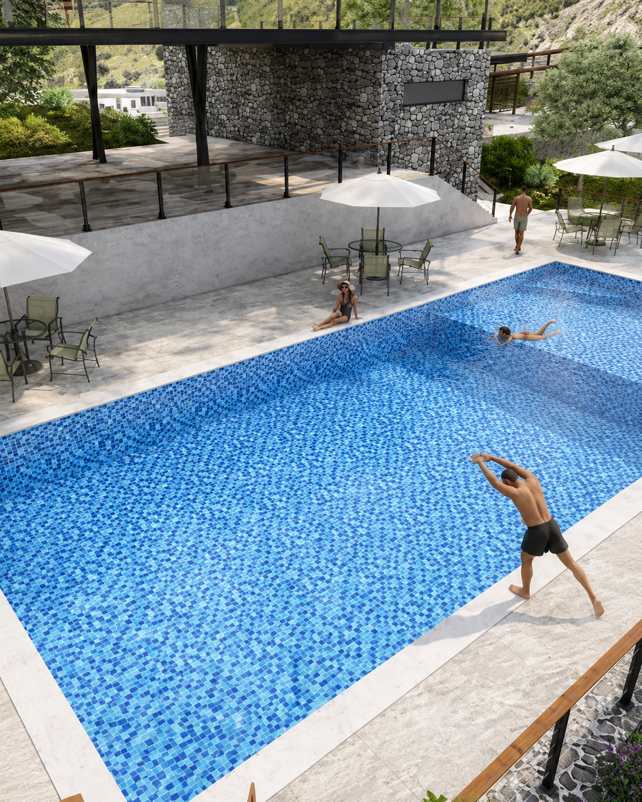

Exclusividad y naturaleza
Frente al LAGO DE CHAPALA
Terrenos residenciales desde $1.5 MDP

El desarrollo
Rancho La Cañada
A diferencia de los terrenos en venta en Guadalajara, aquí encuentras un refugio natural en la hermosa Ribera de Chapala, estratégicamente ubicado para ofrecerte tranquilidad absoluta, clima excepcional y una conexión inigualable con la naturaleza y el estilo de vida campestre. .
Nuestro desarrollo campestre fusiona la tranquilidad de la naturaleza con instalaciones de primer nivel.
Ideal para quienes buscan lotes campestres con amenidades reales como nuestra casa club y alberca , ofreciendo espacios únicos para la relajación, la convivencia familiar y la alta gastronomía.
Contacta a un asesor
La Vid Ritual Spa
La Vid Ritual Spa, una experiencia de bienestar de GRUPO UDAI dentro de Rancho La Cañada, con vista al Lago de Chapala en un entorno de lotes campestres en Tuxcueca, Jalisco.
El spa integra temazcal, circuito de hidromasaje, sauna y agua caliente, sumándose a la casa club y la alberca como parte de las amenidades reales del desarrollo.
Un espacio pensado para el ritual y la calma, a solo 90 minutos de Guadalajara y con la plusvalía en ascenso de la Ribera de Chapala.
Vive el bienestar campestre junto al lago.
Distribución del desarrollo
Masterplan
Lotes campestres de 500 a 850 m², trazados para aprovechar la vista al lago y la cercanía con las amenidades. Conoce la ubicación de cada manzana disponible hoy.
Ficha técnica · Lote 20, Manzana 16
- Terreno
- 527.40 m²
- Construcción
- 384.13 m²
- Recámaras
- 3
- Baños completos
- 3
- Medio baño
- 1
- Terrazas privadas
- 3, una con alberca
RANCHO LA CAÑADA
Lotes
Conoce nuestros lotes residenciales y descubre las opciones disponibles dentro de Rancho La Cañada.
LOTE 20
Manzana 16
Un espacio diseñado para disfrutar la naturaleza, la tranquilidad y el entorno del Lago de Chapala.
+12 años de experiencia, Grupo Udai
Amenidades reales
No son render: la casa club, la alberca y el spa ya operan dentro del desarrollo.
Casa club
Espacios comunes para la convivencia familiar y eventos privados.
Alberca
Vista abierta al Lago de Chapala, sin construcciones de por medio.
La Vid Ritual Spa
Temazcal, hidromasaje, sauna y aguas termales.
Viñedos privados
12 hectáreas de viñedo dentro del mismo desarrollo.
Áreas verdes
Más del 40% del desarrollo destinado a naturaleza y senderos.
Acceso controlado
Caseta de vigilancia y acceso restringido a residentes.
Cómo llegar
Tu entorno de fin de semana
A diferencia de un terreno en Guadalajara, aquí el trayecto es parte del descanso: entras por la carretera Morelia–Guadalajara y en minutos estás frente al lago.
- 01 Entrada sobre la carretera Morelia–Guadalajara
- 02 Zona turística de Tuxcueca
- 03 A 90 minutos de Guadalajara
- 04 A 70 minutos de Chapala
- 05 Hospital Comunitario de Jocotepec
- 06 A 15 minutos de San Luis Soyatlán
Exclusividad y naturaleza
Frente al Lago de Chapala
Terrenos residenciales desde $1.5 MDP